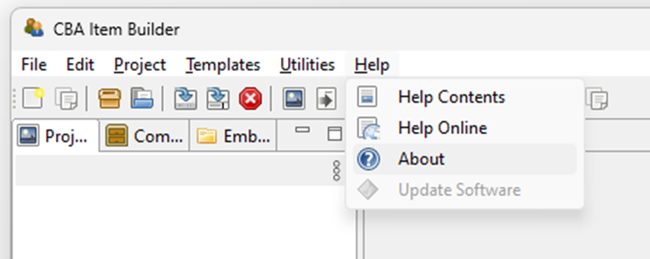
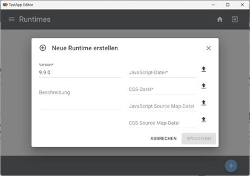

Der IRTlib Editor hat eine kleine Anzahl von Einstellungen.
8.1 Übersicht
Die IRTlib Software ist im Augenblick noch unter Entwicklung. Informationen über die laufende Version (und für Preview-Versionen über den Build-Hash) können im Abschnitt Über das Programm abgerufen werden.
Eingebettete Programmhilfe
8.1.1 Einstellungen
In diesem Bereich können Einstellungen vorgenommen werden, welche die Arbeit mit dem Editor und alle Studien betreffen.
8.1.1.1 Runtimesverwaltung
Um mit dem IRTLib Editor Studien zu konfigurieren, welche CBA ItemBuilder Inhalte verwenden, ist je Version die passende Laufzeitumgebung (Runtime) notwendig. Aktuelle getestete Version der CBA ItemBuilder Runtime sind bereits im Editor hinterlegt, in diesem Bereich können jedoch auch Runtimes für andere Versionen des CBA ItemBuilders oder aktualisierte bzw. korrigierte Runtimes in den Editor importiert werden.
Runtimes, die im Editor verfügbar sind, werden beim Veröffentlichen von Studien automatisch als Teil der Studienkonfiguration integriert und stehen auf diesem Weg aud dem IRTLib Player zur Verfügung.
8.1.1.2 Allgemeine Einstellungen
Ändern Sie in diesem Abschnitt die Sprache für den Editor. Die hier ausgewählte Einstellung hat keinen Einfluss auf die Sprache der Assessmentinhalte in den konfigurierten Studien.
8.1.2 Über das Programm
Finden Sie unter der Schaltfläche Versionsinfo eine Zusammenfassung der letzten Änderungen und Angaben zur aktuellen Programmversion.
8.2 Laufzeitumgebungen
Die IRTlib Software kann mit CBA ItemBuilder Aufgaben verschiedener CBA ItemBuilder Versionen verwendet werden. Die erforderliche Runtime (d.h. die Verbindung zwischen den CBA ItemBuilder-Aufgaben und der IRTlib Software) ist Teil der Studienkonfiguration, damit der IRTlib Player sicher weiß, wie er CBA ItemBuilder-Aufgaben einer bestimmten Version verwenden kann.
Eingebettete Programmhilfe
8.2.1 Laufzeitumgebungen
Um mit dem IRTLib Editor Studien zu konfigurieren, welche CBA ItemBuilder Inhalte verwenden, ist je Version die passende Laufzeitumgebung (Runtime) notwendig. Aktuelle getestete Version der CBA ItemBuilder Runtime sind bereits im Editor hinterlegt, in diesem Bereich können jedoch auch Runtimes für andere Versionen des CBA ItemBuilders oder aktualisierte bzw. korrigierte Runtimes in den Editor importiert werden.
8.2.1.1 CBA ItemBuilder Version prüfen
Es ist wichtig zu wissen, welche Version des CBA ItemBuilders für die Erstellung der Items (d.h. der CBA ItemBuilder-Projektdateien) verwendet wurde. Im Zweifelsfall kann man diese Information z.B. im About Dialog des CBA ItemBuilders finden:
Schritt 1: Öffnen Sie den “Apout”-Dialog über das “Help”-Menü

Schritt 2: Suchen Sie die Versionsnummer im Dialog (hier 9.9.0)
Die Versionsnummer muss in den Einstellungen des IRTlib-Editors im Abschnitt Laufzeiten als eine der Karten aufgeführt sein:
8.2.1.2 Laufzeitdateien importieren
Wenn die entsprechende Runtime nicht bereits im Editor enthalten ist, kann eine neue/zusätzliche Runtime importiert werden. Studienkonfigurationen, die mit dem IRTlib-Editor erstellt/bearbeitet werden, können mehrere Runtimes für verschiedene Versionen enthalten.
Schritt 1: Um eine Runtime zu integrieren, werden eine JavaScript- und eine CSS-Datei benötigt. Diese Dateien können hier heruntergeladen werden:
Schritt 2: Entpacken Sie die heruntergeladene Runtime, die verwendet werden soll.
Schritt 3: Navigieren Sie zum Abschnitt Runtimes:
Schritt 4: Drücken Sie den Button “+” (unten rechts)
Schritt 5: Geben Sie die Versionsnummer mit drei Stellen ein (z.B. 9.9.0):

Schritt 6: Wählen Sie die Datei main.*.js aus dem ZIP-Archiv aus, das die Laufzeitumgebung enthält. Beachten Sie, dass das * dem Hash der Datei entspricht (d.h. der vollständige Dateiname sieht aus wie main.19479ac3.js)
Schritt 7: Wählen Sie die Datei main.*.css aus dem ZIP-Archiv, das die Runtime enthält. Beachten Sie, dass der * dem Hash der Datei entspricht (d.h. der vollständige Dateiname sieht aus wie main.b765ceca.css)
Hinweis: Das Feld Description und die beiden zusätzlichen Map-Files (für JavaScript Source und für CSS Source) sind optional.
Schritt 8: Drücken Sie die Schaltfläche Speichern, um den Import der Runtime abzuschließen:
Nach dem Import werden die unterstützten CBA ItemBuilder-Versionen im Abschnitt Runtime aufgelistet. Um eine Runtime für eine bestimmte Version zu löschen, klicken Sie auf das Papierkorb-Symbol unten rechts auf der “Karte” und bestätigen Sie mit Löschen.